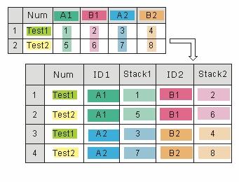

ワークシート列のスタッキング
Wks-Stacking-Cols
列ラベルで列をスタッキングする
ワークシート列のスタッキングツールを使って、素データモードからインデックスデータモードに変換することができます。元のデータセットでは、サンプルは、グループごとに別の列に保存されています。スタッキング後には同じ列の違う行に保存され、グループ情報を提供するワークシート(元のサンプルが属するグループ)の中に列が追加されます。
この機能を使うには
- データの入った新しいワークシートを作成します。
- データを選択します。
- メニューからデータ整形：列スタッキングを選び、wstackcolダイアログボックスを開きます。
実際には、Xファンクションwstackcolが呼び出されて操作を行います。
ダイアログの設定
| 再計算
|
結果を再計算する方法を指定します。詳細は分析結果の再計算を確認してください。
|
| 入力スタック列
|
ソースデータから列を選択します。少なくとも2列必要です。
|
| グループ識別子
|
- グループ行
- グループ情報を含む列ラベル行を選択します。この情報を使って、ツールはサンプルが属するグループを識別します。複数行選択されている場合、グループの選択の順序は下側のテキストボックスに表示されます。
|
| オプション
|
スタッキングのオプション
- 他の列を含める
- 出力の際に、他の列を含めるか指定します。このチェックボックスがチェックされていると、含める列を選択できます。
- サブグループにスタック
- 元のサンプルを複数のサブグループにスタックするかどうか指定します。これが選択されていない場合、入力サンプルのすべてが1列に保存されます。このチェックボックスがチェックされると、サブグループの数またはサンプルがスタックされる列の数を指定できます。
- 例えば、元のデータに6グループあり、2つのサブグループを選択した場合、1、3、5番目のグループが1つ目のサブグループになり、残りは2つ目のサブグループになります。
- グループの交互挿入
- 異なるグループからのサンプルを混ぜるかどうか指定します。
- 例えば、元のデータセットに2つのグループがあり、このオプションを選択すると、出力列の偶数行は、最初のグループに属するサンプルで、奇数行は2番目のグループからのサンプルになります。このチェックボックスが選択されていない場合、出力列の最初のn行 (nは最初のグループのサンプル数) は、最初のグループからのサンプルを含み、残りの行は2番目のグループからのサンプルを含みます。
- 欠損行の排除
- 元の列にある欠損値を含む行を、無視するかどうかを指定します。
|
| 出力設定
|
- グループ列のロングネーム
- グループ列のロングネームを指定します。以下のオプションがあります。
- <グループ行ヘッダ>
- グループ情報があるヘッダ行。言い換えると、グループ行(上記参照)です。
- グループ
- グループn
- クラス
- クラスn
- データ列のロングネーム
- 出力データ列のロングネームを使用します。ロングネームが列挙されます。
- 出力ワークシート
- 結果を出力するワークシートを指定します。
|
列をスタッキングする方法
この機能は、列をスタック、行ごとに列をスタックできます。他の列を含めたり、サブグループの数を指定することもできます。そのため、スタッキングの方法は下記のように数通りになります。
- いくつかの列からの値を、グループ内の複数行にスタックします。
- 列を積み重ねていくのではなく、行インデックスに従って列をスタックします。列の値は交互に配置されます。

- このスタック方法は元のワークシート列にある他の列に加え、新規ワークシートに新しくスタックされた列を含みます。
- 行に従って列をスタックし、元のワークシートの非スタック列を含めます。

- 複数列を2つ以上のグループにスタックします。
- 複数列を、行に従って2つ以上のグループにスタックします。
- 複数の列を2つ以上のグループにスタックし、元のワークシートの非スタック列を含めます。
- 
- 行によるスタック、サブグループにスタックし、他の列も含める
- 複数の列を、行に従って2つ以上のグループにスタックし、元のワークシートの非スタック列を含めます。
サンプル
次の例では、サンプルデータファイル内の列を積み重ねて、別の形式で表示されるようにします。
- \Samples\Statistics\Body.ogwファイルを開きます。
- Maleワークシートの列B、C、およびDを選択し、メニューからワークシート：列スタッキングを選択して、wstackcolダイアログを開きます。
- 別の列を含めると グループの交互挿入にチェックを付け、他の設定はデフォルトのままにします。

- OKボタンをクリックして実行します。次のような結果が出力されます。
列属性で列をスタッキングする
列（プロット）属性でワークシートの列を重ねることもできます。coljoinbydesig Xファンクションダイアログはメニューからは開けませんが、ユーザーインターフェースで開くことができます。
- ウィンドウメニューをクリックして スクリプトウィンドウまたは コマンドウィンドウを開きます。
- 以下をコピーして貼り付け（または入力し）、Enterキーを押します。
coljoinbydesig -d

ダイアログコントロールの使い方は簡単です。
- 入力は、列属性で積み重ねるワークシートデータです。
- 出力は、積み重ねたデータ（新しいシート、新しいブックなど）を出力するフィールドです。